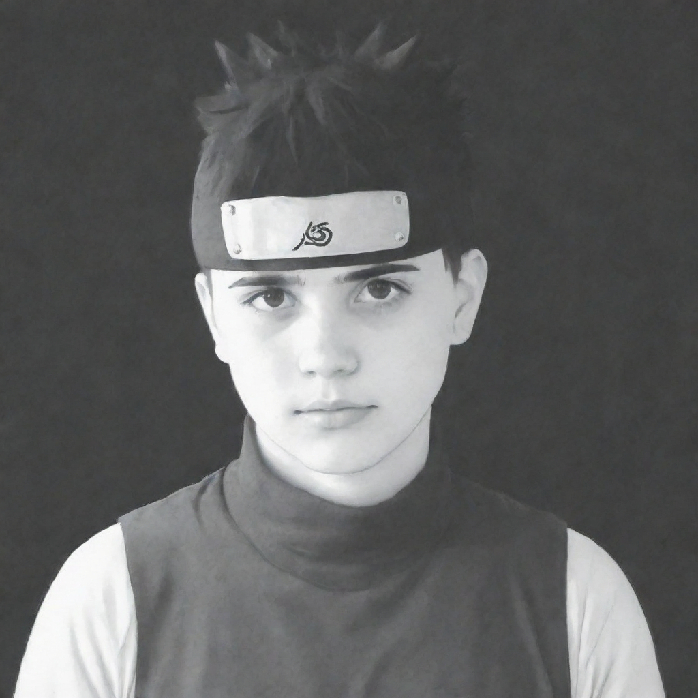

Mi, Kovács Sándor Bence és Papp Gyula, egy lelkes csapat vagyunk, akik elhatározták, hogy megnyitják saját barkácsboltjuk weboldalát. Szeretjük a barkácsolás izgalmát, és örömünket leljük abban, hogy segítünk másoknak megvalósítani kreatív projektjeiket.
Mindketten szenvedélyesen érdeklődünk a barkácsolás iránt már kiskorunk óta. Szeretettünk építeni, javítani, és új dolgokat alkotni a kezünkben lévő eszközökkel. Ez a szenvedély vezetett minket oda, hogy elhatározzuk, saját barkácsboltunkat nyitjuk meg, ahol másokkal is megoszthatjuk a tudásunkat és a szerelmünket a barkácsolás iránt.
Weboldalunkon mindent megtalálsz, amire szükséged van a barkácsoláshoz, a szerszámoktól és az anyagoktól a tippekig és a trükkökig. Szeretnénk egy olyan online közösséget teremteni, ahol a barkácsolás szerelmesei összegyűlhetnek, megoszthatják ötleteiket, és inspirálhatják egymást.
Biztosak vagyunk benne, hogy weboldalunk értékes forrás lesz mind a tapasztalt barkácsmesterek, mind a kezdők számára. Reméljük, hogy hamarosan ellátogatsz hozzánk, és megtapasztalod magad, mit kínálunk!
Kovács Sándor Bence , avagy a fortnite-os KFC kid
Papp Gyula,avagy a mindent is megmókolni tudó szaki
Ha már eddig eljutottál,itt van egy jutalom,csak neked ;) .
Nézd meg hogyan szerezte ez a medve a legvalószínűtlenebb barátot.
(Kattints a ládára a kinyitáshoz!)